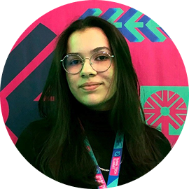
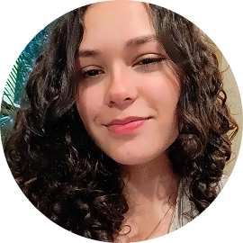
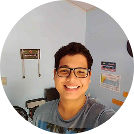

Pesquisadores Responsáveis
Dr. Ariel Soares Teles
Doutor em Engenharia de Eletricidade pela Universidade Federal do Maranhão (UFMA). Pós-doutorado em Biotecnologia na Universidade Federal do Piauí (UFPI/Campus Parnaíba). Professor permanente do Programa de Pós-graduação em Biotecnologia da UFDPar (PPGBiotec/UFDPar), pesquisador associado do Neuro-innovation Technology & Brain Mapping Laboratory (NITLAB/UFDPar). Membro da International Society for Research on Internet Interventions (ISRII).Me. Adonias Caetano de Oliveira
Doutorando em Biotecnologia pela Universidade Federal do Delta do Parnaíba (UFDPar). Possui experiência na área de Inteligência Computacional Aplicada, Processamento de Linguagem Natural, Aprendizagem Profunda e Desenvolvimento de Software. Pesquisador estudante na área de Inteligência Artificial Explicável aplicada no reconhecimento de padrões de ideação suicida em textos não clínicos.Me. Evandro Jose dos Santos Diniz
Mestre em Biotecnologia pelo PPGBiotec/UFDPar. Especialista em Docência para a Educação Profissional - SENAC-PI/SP e em Gestão Educacional em Rede pelo CEAD/UFPI. Graduado em Administração pela Universidade Federal do Piauí - UFPI e Ciência da Computação pela Universidade Estadual do Piauí - UESPI.Alunas Pesquisadoras

Laís Carvalho Coutinho
Aluna de Ciência da Computação no Instituto Federal do Ceará (IFCE/Campus Tianguá).Bolsista do Programa Institucional de Bolsas de Iniciação Científica (PIBIC) sobre Large Language Models na Identificação de Ideação Suicida em Textos Não Clínicos.

Rosana Celine Pinheiro Damaceno
Aluna de Ciência da Computação no Insituto Federal do Ceará (IFCE/Campus Tianguá). Bolsista do Programa Institucional de Bolsas de Iniciação Em Desenvolvimento Tecnológico e Inovação (PIBITI) sobre o Desenvolvimento de uma Solução Inteligente Baseada em Fenotipagem Digital para Saúde Mental.
